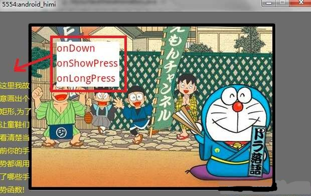
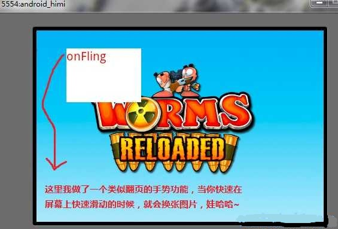

【Android2D游戏开发十六】详解Gesture 手势操作！实现切换图片
对于Android的手势不光在软件中会经常用到，比如浏览器中的翻页，滚动页面等等;当然其实在我们开发Android游戏的时候加上了Android手势操作更会让游戏增加一个亮点，比如一般的CAG,PUZ等类型的游戏选择关卡啦、简单背景的移动啦，都可以使用手势来操作即可，类似前段时间很火的《让人愤怒的小鸟！》咳咳、不好意思说错了，是《愤怒的小鸟》，因为总是听群里啊，朋友啊说小鸟出新版本啦，小鸟出PC硬盘版啦！ 唉~你说可让人愤怒，其实说实话，小鸟这个游戏确实不错，我所看到的唯一的亮点是这款游戏的创意！说实话，现在的游戏没有做不出来的只有想不出来的好创意、咳咳。回到话题来，那么下面我们来稍微了解下什么是Android 手势！
所谓手势操作，类似跳舞机、EZdancer~这些利用不同动作和音符让人手舞足蹈一样，那么Android这里的手势只是让我们在游戏和软件中的操作有了更多的花样和玩法，根据玩家接触屏幕时间的长短，在屏幕上滑动的距离，按下抬起的时间等进行了包装，其实就是Android 对触屏处理做了包装和处理。
那么在Android中其实有两种手势识别技术。一种是触摸屏手势识别，另一种是输入法手势识别；两者比较起来第二种比较灵活，可以自定义手势，比较high！那么这一节我们先来介绍第一种手势识别：触摸屏手势识别;在下篇博文中我会给童鞋们讲解输入法手势识别！
先把两张截图放上来吧


OK，老方式，先上代码：MySurfaceView.java
import java.util.Vector;import android.content.Context;
import android.graphics.Bitmap;
import android.graphics.BitmapFactory;
import android.graphics.Canvas;
import android.graphics.Color;
import android.graphics.Paint;
import android.util.Log;
import android.view.GestureDetector;
import android.view.MotionEvent;
import android.view.SurfaceHolder;
import android.view.SurfaceView;
import android.view.View;
import android.view.GestureDetector.OnGestureListener;
import android.view.SurfaceHolder.Callback;
import android.view.View.OnTouchListener;
/**
* @ Gesture （上文）触摸屏手势识别
*/
public class MySurfaceViewAnimation extends SurfaceView implements Callback,
Runnable, OnGestureListener, OnTouchListener {
private Thread th = new Thread(this);
private SurfaceHolder sfh;
private Canvas canvas;
private Paint paint;
private Bitmap bmp;
private GestureDetector gd;
private int bmp_x, bmp_y;
private boolean isChagePage;
private Vector<String> v_str;// 备注1
public MySurfaceViewAnimation(Context context) {
super(context);
v_str = new Vector<String>();
this.setKeepScreenOn(true);
bmp = BitmapFactory.decodeResource(getResources(),
R.drawable.android_dream);
sfh = this.getHolder();
sfh.addCallback(this);
paint = new Paint();
paint.setAntiAlias(true);
this.setLongClickable(true);
// setLongClickable( true )是必须的，因为 只有这样，
// 我们当前的SurfaceView(view)才能够处理不同于触屏形式;
// 例如：ACTION_MOVE，或者多个ACTION_DOWN
this.setOnTouchListener(this);// 将本类绑定触屏监听器
gd = new GestureDetector(this);
gd.setIsLongpressEnabled(true);
}
public void surfaceCreated(SurfaceHolder holder) {
// 当系统调用了此方法才创建了view所以在这里才能取到view的宽高！！有些童鞋总是把东西都放在初始化函数里！
// 线程最好放在这里来启动，因为放在初始化里的画，那view还没有呢,到了提交画布unlockCanvasAndPost的时候就异常啦！
bmp_x = (getWidth() - bmp.getWidth()) >> 2;
bmp_y = (getHeight() - bmp.getHeight()) >> 2;
th.start();
}
public void draw() {
try {
canvas = sfh.lockCanvas();
if (canvas != null) {
canvas.drawColor(Color.WHITE);// 画布刷屏
canvas.drawBitmap(bmp, bmp_x, bmp_y, paint);
paint.setTextSize(20);// 设置文字大小
paint.setColor(Color.WHITE);
// 这里画出一个矩形方便童鞋们看到手势操作调用的函数都是哪些
canvas.drawRect(50, 30, 175, 120, paint);
paint.setColor(Color.RED);// 设置文字颜色
if (v_str != null) {
for (int i = 0; i < v_str.size(); i++) {
canvas.drawText(v_str.elementAt(i), 50, 50 + i * 30,
paint);
}
}
}
} catch (Exception e) {
Log.v("android", "draw is Error!");
} finally {
sfh.unlockCanvasAndPost(canvas);
}
}
@Override
public void run() {
while (true) {
draw();
try {
Thread.sleep(100);
} catch (Exception ex) {
}
}
}
public void surfaceChanged(SurfaceHolder holder, int format, int width,
int height) {
}
public void surfaceDestroyed(SurfaceHolder holder) {
}
// @Override
// public boolean onTouchEvent(MotionEvent event) {// 备注2
// return true;
// }
@Override
public boolean onTouch(View v, MotionEvent event) {// 备注3
if (v_str != null)
v_str.removeAllElements();
return gd.onTouchEvent(event);// 备注4
}
// --------------以下是使用OnGestureListener手势监听的时候重写的函数---------
/**
* @以下方法中的参数解释：
* @e1：第1个是 ACTION_DOWN MotionEvent 按下的动作
* @e2：后一个是ACTION_UP MotionEvent 抬起的动作(这里要看下备注5的解释)
* @velocityX：X轴上的移动速度，像素/秒
* @velocityY：Y轴上的移动速度，像素/秒
*/
@Override
public boolean onDown(MotionEvent e) {
// ACTION_DOWN
v_str.add("onDown");
return false;
}
@Override
// ACTION_DOWN 、短按不移动
public void onShowPress(MotionEvent e) {
v_str.add("onShowPress");
}
@Override
// ACTION_DOWN 、长按不滑动
public void onLongPress(MotionEvent e) {
v_str.add("onLongPress");
}
@Override
// ACTION_DOWN 、慢滑动
public boolean onScroll(MotionEvent e1, MotionEvent e2, float distanceX,
float distanceY) {
v_str.add("onScroll");
return false;
}
@Override
// ACTION_DOWN 、快滑动、 ACTION_UP
public boolean onFling(MotionEvent e1, MotionEvent e2, float velocityX,
float velocityY) {
v_str.add("onFling");
// -------备注5----------
// if(e1.getAction()==MotionEvent.ACTION_MOVE){
// v_str.add("onFling");
// }else if(e1.getAction()==MotionEvent.ACTION_DOWN){
// v_str.add("onFling");
// }else if(e1.getAction()==MotionEvent.ACTION_UP){
// v_str.add("onFling");
// }
// if(e2.getAction()==MotionEvent.ACTION_MOVE){
// v_str.add("onFling");
// }else if(e2.getAction()==MotionEvent.ACTION_DOWN){
// v_str.add("onFling");
// }else if(e2.getAction()==MotionEvent.ACTION_UP){
// v_str.add("onFling");
// }
if (isChagePage)
bmp = BitmapFactory.decodeResource(getResources(),
R.drawable.android_dream);
else
bmp = BitmapFactory.decodeResource(getResources(),
R.drawable.android_warm);
isChagePage = !isChagePage;
return false;
}
@Override
// 短按ACTION_DOWN、ACTION_UP
public boolean onSingleTapUp(MotionEvent e) {
v_str.add("onSingleTapUp");
return false;
}
}
补充一下：代码初始化手势的时候有这么一句:gd.setIsLongpressEnabled(true);这个函数标识，如果你设置true的话就是开启了长按键，当你长时间触屏不动就能得到 onLongPress 手势，如果设置false 那么你长时间触屏不移动也得不到这个手势的支持~此函数不设置也默认设置为true
备注1:
这里我只是给一些不太熟悉这种定义Vector方式的童鞋简单介绍一下：我们一般定义容器的时候都是直接 Vector vc =new Vector();嗯，没错，但是这种Vector<String>的定义是种泛型定义，那么简单的说下区别，如果Vector vc =new Vector();这种方式装入Object的以后，取的时候是不是要把取出的进行强转一下类型？！ 呵呵，而Vector<String>这种定义的时候就表明了这个容器我只装String类型的元素，so~取出的时候也不用再去强转了。
备注2 :
通过测试发现，这里仍然响应触屏时间，即使你把触屏焦点设置成setFocusableInTouchMode(false)也会调用！！！原因是因为我们本类的view绑定了触屏事件监听器，那么肯定会先响应备注3，然后我们备注4这里没有 return true而是直接返给了手势监听器去监听，让监听器找合适的函数来处理用户的手势,也就是说没有标志处理完成，所以我们的重写的onTouchEvent()也会继续去处理!
备注5：这里注释的代码我是在测试两个动作到底是哪两个，因为网上介绍Android手势帖子都疯传说: 第一个是MotionEvent.ACTION_DOWN 第二个是MotionEvent.ACTION_MOVE!那么第一个动作是按下好理解是玩家刚触屏的动作，第二个是move！难道是移动的点都记录下来了？？ 其实测试结果发现： 第一个是MotionEvent.ACTION_DOWN 第二个是MotionEvent.ACTION_UP! 唉~现在网上的帖子真是各种抄袭~就不能测试下？？郁闷！ 既然这两个动作一个是按下一个是抬起那就很明确其意义了，我们可以根据 这两个动作知道用户到底滑动的距离等等了，其距离e2.getX()-e1.getX();
总结：
1.触屏后、一直触屏不动、演变顺序：onDown->onShowPress->onLongPress；
2.触屏后、一直触屏慢移动是onScroll/快移动是onFling 、手指离开屏幕；
注意 ：触屏后、一直触屏移动，如果手指不离开屏幕一直都是onScroll,不管你移动的速度多快,永远不会是onFling！